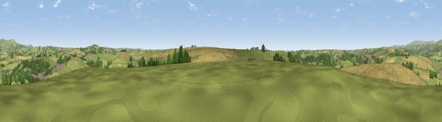

Viewpoint near Modbury
#20193 in England · top 43% of its area beats it · near ModburyWhere it is
The exact computed spot (SX 65325 50775). Click the marker for map links.
The view, rendered

A 360° render of this exact spot computed from the terrain model, tree cover and land cover — summer colours, afternoon light, calibrated against photographs of famous viewpoints. Real trees, hedges and buildings will differ in detail.
The panorama
Grey silhouette: terrain skyline in each direction (720 bearings, Earth curvature and refraction included). Dashed green: skyline with trees (+15 m) and buildings (+8 m) as obstacles. Blue strip: how far the ground is visible on each bearing.
Where the view opens
Wedge length = distance to the farthest visible ground on that bearing (vegetation-aware). Rings at 10, 25 and 50 km.
What fills the view
52% grassland · 30% cropland · 15% woodland · 3% built-up
Angular shares of the visible panorama (visual magnitude), not map area. Landscape diversity 0.47 (0–1 Shannon).
Key numbers
More beautiful places nearby
The staircase of upgrades: each row has a higher view potential than everything closer. Driving times are estimates from straight-line distance, calibrated against real road routing — check an actual route before setting out.
| Place | Direction | Drive | Score |
|---|---|---|---|
| Viewpoint near Modbury | S · 1 km | ~3 min | 58.9 |
| Viewpoint near Modbury | SW · 1 km | ~3 min | 65.9 |
| Seven Stones Hill | S · 2 km | ~6 min | 69.2 |
| Viewpoint near Mothecombe | SSW · 5 km | ~11 min | 76.2 |
| Viewpoint near Mothecombe | SSW · 6 km | ~12 min | 78.6 |
| Western Beacon | N · 7 km | ~14 min | 81.9 |
| Viewpoint near Hope | SSE · 12 km | ~23 min | 84.4 |
| Viewpoint near East Prawle | SE · 19 km | ~32 min | 84.6 |
50.34146, -3.89397 · source: screening · position refined by local search. Computed location — check access rights before visiting.